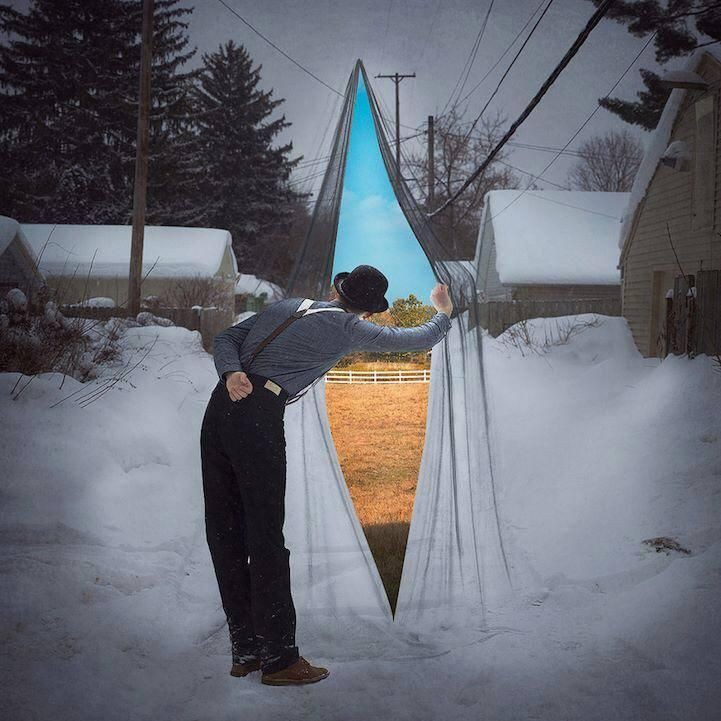

¿QUE RELACIÓN TIENE LA PEREZA CON LOS SUEÑOS DE FANTASÍA?
Autor: Preuniv. Limachi Valero B. Anthony
¿QUE ES LA PEREZA?
Como bien sabemos la PEREZA es un valor negativo, que sin duda, la mayoria de las personas, por no generalizar a todos; cometemos dia a dia, se deja asuntos o tareas pendientes "a los cuales en ese momento no se le da importancia"; para realizarlos despues. A esto se le denominaria procastinacion, pero este es un tema parte a tratarse
ya que si parte de la pereza y tiene similitudes pero no son exactamente lo mismo.
A continuacion una breve tabla de comparacion entre pereza y procastinacion:
| PEREZA |
PROCASTINACION |
| Una persona que ha caido en la pereza, disfruta estar en el ocio sin remordimiento alguno. |
Cuando una persona comete procastinacion, sabe que tiene deberes y al postergarlos y no realizarlos padece de angustia por ello. |
Ya que ya sabemos la diferenciacion entre ambos, enfoquemonos en el antivalor que es la PEREZA o la flojera en otros terminos.
- CAUSAS Y FACTORES
- Causas fisicas:
- Anemia.
- Dolor o cansancio del cuerpo.
- Por mala alimentacion
- Causas mentales o psicologicas:
- Ansiedad.
- Depresion/No encontrar un proposito para vivir.
- Transtorno bipolar.
- Cansancio mental.
- Ensoñacion.
- CONSEJOS PARA EVITAR Y/O ERRADICAR LA PEREZA
- Mantén un entorno limpio y organizado. ...
- Rodeate de personas energicas. ...
- Realizar actividades fisicas (caminar, trote, ejercicio, deportes...)
- Haz una lista de tareas pendientes. ...
- Prioriza lo que tienes que realizar. ...
- Piensa en los beneficios que vas a conseguir. ...
- No busques la perfeccion al principio. ...
- Enfrenta pequeñas metas. ...
- Empieza por la tarea más dura. ...
- Elimina las distracciones. ...
- Premia tu esfuerzo!
- lo mas importante es la fuerza de voluntad y ganas de mejorar como persona...
- DESVENTAJAS
- Bajo rendimiento o negligencia en labores academicas o trabajo.
- Decaimiento del cuerpo y acortacion de años de vida.
- Desprecio por la sociedad
Si eres un perezoso/a que esperas para cambiar. ¡Nunca es tarde!
¿QUE SON LOS SUEÑOS FANTASIOSOS?

Los sueños fantasiosos son escenarios falsos/ficticios creados a partir de la mente en reposo,durmiendo o podria ser que alguien posea una mente muy imaginaria
creando dichos escenarios perfectos pero no realistas para la vida real En este mundo de fantasía, dejamos volar nuestra imaginación y visualizamos lo que queremos llegar a ser o alcanzar como personas.
Hay personas, que tienen la dificultad de saber con claridad que es lo que quieren alcanzar y se pasan parte de sus vidas preguntándose que es lo que quieren.
El no saber con claridad que se quiere, es mas común de lo que pensamos y es lo que de verdad debe causarnos gran inquietud. Si no sabemos que queremos, ¿cómo seremos capaces de lograr alcanzarlo?
Las imágenes que componen nuestro sueño, son una agradable fantasía donde nos vemos como los actores de una realidad deseada. Con la imaginación podemos soñar, pero para vivir un sueño tenemos que poner mucho más.
Esta realidad fantástica está en nuestro interior y seguirá siendo un sueño siempre y cuando no movamos nuestro cuerpo y mente para lograr alcanzarlo.
No basta que tengamos un sueño, no basta que toquemos un sueño, es necesario vivir y realizar nuestro sueño para llegar a saber que nuestra vida ha tenido un objetivo, que hemos cumplido y nos ha hecho inmensamente felices.
Debemos hacer lo imposible para alcanzar nuestro sueño, sólo así seremos conscientes de que un sueño puede llegar a ser real para dejar de ser solo un sueño más.
Contextualización
No elegimos con qué soñamos o con quien. Por ello la temática de los sueños puede ser muy variada y en este caso, nos encontramos con el mundo de lo fantástico. Sí, porque hoy nos preguntamos cuál es el significado de soñar con fantasías, y te lo vamos a desvelar.
Claro que cuando hablamos de ese mundo fantástico, son muchos los detalles que lo rodean. No son igual las fantasías de tipo sexual que los animales fantásticos o bien, los personajes de tus series favoritas.
- El significado de soñar con fantasías
Es bastante habitual. Todo ello viene de nuestro subconsciente, ya que por regla general es una manera de poder salirse de la rutina a la que nos acostumbramos. Una vía de escape que se posiciona en estas temáticas más fantásticas y que nos lleva a vivir nuevas aventuras.
De una manera más concreta, cuando nuestro sueño tiene elementos fantásticos, se dice que representa nuestros deseos. Pero también pueden darle vida a distintos temores, dependiendo de la imagen o del momento del sueño y si sentimos alegría o estamos atemorizados. Es decir, que una vez que hayamos soñado con fantasía, siempre hay que desgranar un poco más qué tipo de sueño y qué elementos hemos visto en él. Para comenzar, sabemos que partimos de los deseos que tenemos ocultos y queremos aflorar.
- Tipos de sueños con fantasías
- Sexuales
Si tienes sueños de tipo sexual y fantasías, tienes que saber que en ellos también hay distintos significados. Por un lado, si haces una orgía en tu sueño, entonces puede indicar que necesitas más cariño del que tienes. Mientras que si el encuentro sexual es con una persona que no conoces, podríamos decir que tienes bastante inseguridades y debes analizarlas y enfrentarte a ellas. Si te ves realizando nuevas prácticas es que necesitas un cambio y salir de la rutina.
- Superhéroes de fantasía
Quizás no es uno de los sueños más frecuentes, pero también puede darse. Eso de soñar con nuestros superhéroes también tiene algo que contarnos. Si lo ves que está volando, entonces en indicador de que no siempre las soluciones vienen por pensarlo demasiado. Es mejor echar a volar esa intuición que tenemos y ahí estará la clave.
g
Mientras que si sueñas que eres un superhéroe, entonces hay que decir que eres una persona llena de seguridad, de dejar huella y de dar los pasos correctos en el momento que hay que hacerlo. Una manera de revelar que no necesitas de nadie más, que te vales por tí mismo o misma.
- Animales de fantasía
Por regla general, cuando soñamos con animales fantásticos esto hace referencia a nuestra vida personal y sentimental. Reflejan la fidelidad y como no, puede ponerse a prueba dependiendo del sueño en sí. Pero no solo entre la pareja y tú, sino también en cuestión de amistad o compañerismo.
Si ves un unicornio con alas, entonces indica que te vas a encontrar con una nueva persona que cambiará tu vida. Si el unicornio es blanco y está cerca, entonces refleja un amor de verdad. Si ves un dragón es sinónimo de que te encuentras en un buen momento, donde la paz reina en tu día.
- Profesión fantasía
En este caso, cuando soñamos con todas esas profesiones como ser policía o bien médico y enfermera, entonces nos indica que va a llegar un cambio en tu vida. Algo que ya llevas necesitando desde hace un tiempo pero que hasta el momento no habías conseguido. A veces también puede indicar un impulso en nuestra carrera. Por lo que con un esfuerzo, seguro que lo conseguiremos.
- Soñar con lugares fantásticos
Significado de soñar con lugares de fantasia
A veces no es un animal ni tampoco una persona sino que nos encontramos en esos lugares mágicos, que siempre suceden en las películas, pero en este caso se han trasladado a los sueños. Pues bien, también tiene un significado y este es el de la esperanza y la ilusión. Parece que tus metas se ven cada vez más cerca y eso, hace que sientas más energía y más positivismo.
- Soñar con las leyendas
Son muchas las leyendas, esos cuentos realmente antiguos pero que siempre dan qué pensar. Lo cierto es que sí tenemos que incluirlos en el significado de soñar con fantasías. Pues bien, si en tu sueño ves una leyenda que conoces, sea cuál sea, entonces tienes que saber que tienes miedo a enfrentarte a lo que desconoces. Ya se a personas o bien a situaciones que podrían llegar en tu vida.
Y ¿Cómo se relacionan estos hábitos?